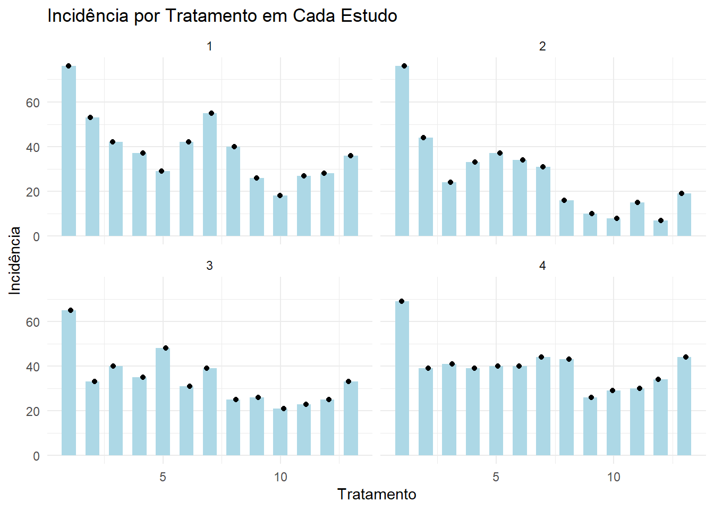
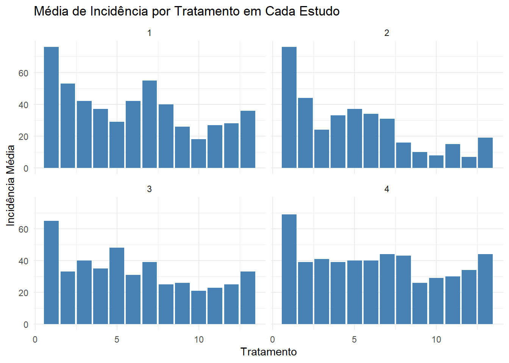
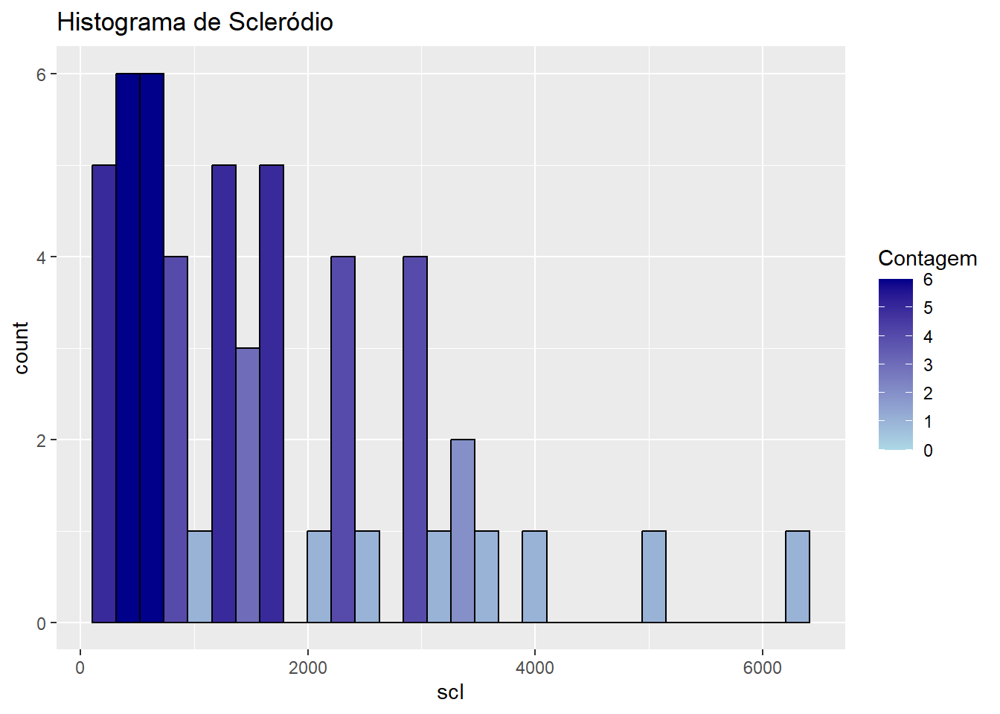

Transformação de dados
Antes de realizar análises estatísticas no R, é comum aplicar transformações nos dados para atender aos pressupostos dos testes. Transformações como log() (logarítmica) e sqrt() (raiz quadrada) são frequentemente utilizadas para corrigir assimetrias, reduzir a variabilidade e aproximar a distribuição dos dados da normalidade.
Essas transformações também podem ajudar a garantir a homogeneidade de variâncias (homocedasticidade), requisito importante em testes como ANOVA e regressão. A escolha da transformação adequada depende do tipo de dado e da distribuição observada.
Homogeneidade de variâncias, também chamada de homocedasticidade, é um pressuposto fundamental em muitas análises estatísticas, como ANOVA, regressão linear e testes paramétricos. Significa que os grupos ou categorias comparados apresentam variações semelhantes em seus dados. Em outras palavras, a variância (dispersão dos dados em torno da média) é aproximadamente igual entre os grupos.
Transformação logarítmica (log())
A função log() aplica o logaritmo (geralmente na base e) aos valores de uma variável. Ela é usada principalmente para:
Reduzir a assimetria positiva (distribuições com cauda longa à direita),
Corrigir heterogeneidade de variâncias (valores muito espalhados),
Tornar os dados mais próximos da normalidade.
Transformação por raiz quadrada (sqrt())
A função sqrt() calcula a raiz quadrada dos valores.
Ela é indicada para:
Reduzir a dispersão dos dados;
Suavizar distribuições assimétricas;
Melhorar a homogeneidade de variâncias em dados com contagens ou proporções.
Exploração dos dados
Para essas analises vamos explorar um conjunto específico: o conjunto de dados “mofo”, que faz parte da planilha intitulada “dados-diversos”. Familiarizar-se com os dados nos ajuda a identificar padrões, possíveis distorções e a necessidade de ajustes estatísticos.
Os dados podem ser explorados por meio de diferentes tipos de visualizações, como gráficos de dispersão, histogramas e boxplots. Neste primeiro momento, vamos visualizar os valores da variável inc (incidência) em função dos tratamentos e do estudo ao qual pertencem. Para isso, utilizaremos a função ggplot(), incluindo tratamento no mapeamento estético principal, e study dentro da função facet_wrap(). Essa função permite gerar um gráfico para cada categoria da variável especificada, facilitando a comparação entre estudos.
Também é possível utilizar a função geom_col() para representar os dados de uma maneira alternativa, por meio de colunas proporcionais aos valores das variáveis. Essa abordagem é útil quando se deseja comparar magnitudes de forma direta entre categorias.
Code
library(dplyr)
library(ggplot2)
# 1. Calcular a média de incidência por tratamento dentro de cada estudo
mofo_resumo <- mofo |>
group_by(study, treat) |>
summarise(inc = mean(inc, na.rm = TRUE), .groups = "drop")
# 2. Gráfico combinado: colunas com médias + pontos individuais
ggplot() +
# Camada das colunas com médias
geom_col(data = mofo_resumo,
aes(x = treat, y = inc),
fill = "lightblue", width = 0.6) +
# Camada dos pontos individuais
geom_point(data = mofo,
aes(x = treat, y = inc),
color = "black",
position = position_jitter(width = 0.15, height = 0)) +
facet_wrap(~study) +
theme_minimal() +
labs(title = "Incidência por Tratamento em Cada Estudo",
x = "Tratamento",
y = "Incidência")
Ou ainda fazer um gráfico com colunas:
Code
library(dplyr)
library(ggplot2)
# Agrupar os dados por estudo e tratamento, calculando a média de incidência
mofo_resumo <- mofo |>
group_by(study, treat) |>
summarise(inc = mean(inc, na.rm = TRUE), .groups = "drop")
# Criar o gráfico com colunas e facet_wrap
mofo_resumo |>
ggplot(aes(x = treat, y = inc)) +
geom_col(fill = "steelblue") +
facet_wrap(~study) +
theme_minimal() +
labs(title = "Média de Incidência por Tratamento em Cada Estudo",
x = "Tratamento",
y = "Incidência Média")
Histogramas: Vamos construir dois histogramas para explorar a distribuição dos dados. O primeiro mostrará a distribuição da variável incidência, enquanto o segundo apresentará a distribuição dos valores de escleródio. Esses gráficos nos permitirão observar o padrão de dispersão, a simetria (ou assimetria) e a concentração dos dados em diferentes faixas de valores.
Code
inc <- mofo |>
ggplot(aes(x = inc)) +
geom_histogram(fill = "steelblue", color = "black", bins = 30) +
labs(title = "Histograma de Incidência")
# Histograma da variável scl com escala de cor baseada na contagem
mofo |>
ggplot(aes(x = scl, fill = ..count..)) +
geom_histogram(color = "black", bins = 30) +
scale_fill_gradient(low = "lightblue", high = "darkblue") +
labs(title = "Histograma de Scleródio", fill = "Contagem")
Boxplot: Vamos construir um boxplot para visualizar a distribuição e a variação dos dados da variável scl, facilitando a identificação de medianas, dispersão e possíveis outliers.
Patchwork: iremos juntar os dois gráficos.
Média dos dados
Após a visualização dos dados, podemos calcular a média para resumir seu valor central. Para isso, podemos usar diferentes abordagens no R, como acessar diretamente uma coluna com $, aplicar a função mean() ao conjunto de dados ou utilizar a função summary(), que fornece um resumo estatístico incluindo a média.
Transformação dos dados
Como abordado anteriormente podemos transformar os dados de diversas formas, as mais comuns são a logaritmica e a raiz quadrada.
# A tibble: 52 × 6
study treat inc scl yld scl2
<dbl> <dbl> <dbl> <dbl> <dbl> <dbl>
1 1 1 76 2194 2265 7.69
2 1 2 53 1663 2618 7.42
3 1 3 42 1313 2554 7.18
4 1 4 37 1177 2632 7.07
5 1 5 29 753 2820 6.62
6 1 6 42 1343 2799 7.20
7 1 7 55 1519 2503 7.33
8 1 8 40 516 2967 6.25
9 1 9 26 643 2965 6.47
10 1 10 18 400 3088 5.99
# ℹ 42 more rowsA transformação logarítmica
A transformação logarítmica é especialmente útil quando os dados apresentam distribuição assimétrica positiva ou quando a variabilidade cresce exponencialmente conforme os valores aumentam. Para aplicar o logaritmo dos números no R, utilizamos a função log().
Além disso, a função mutate() do pacote dplyr permite criar ou modificar variáveis no conjunto de dados, facilitando a aplicação dessas transformações. Com mutate(), adicionamos novas colunas que são funções de variáveis já existentes, tornando o processo de transformação simples e integrado ao fluxo de análise.
Para visualizar os dados faremos um histograma:
Transformação por raiz quadrada
Transformação por raiz quadrada: essa transformação é útil para reduzir a assimetria em dados com distribuição assimétrica positiva.
# A tibble: 52 × 6
study treat inc scl yld scl2
<dbl> <dbl> <dbl> <dbl> <dbl> <dbl>
1 1 1 76 2194 2265 46.8
2 1 2 53 1663 2618 40.8
3 1 3 42 1313 2554 36.2
4 1 4 37 1177 2632 34.3
5 1 5 29 753 2820 27.4
6 1 6 42 1343 2799 36.6
7 1 7 55 1519 2503 39.0
8 1 8 40 516 2967 22.7
9 1 9 26 643 2965 25.4
10 1 10 18 400 3088 20
# ℹ 42 more rowsNós utilizamos a função sqrt() dentro da função mutate(), que permite criar ou modificar variáveis no conjunto de dados.
Para visualizar os dados faremos um histograma:
Testes nos dados da variável produtividade.
Função arrange()
Agora vamos utilizar a função arrange() com o conjunto de dados survey. Essa função serve para ordenar as linhas do dataframe de acordo com uma ou mais colunas, podendo ser em ordem crescente (padrão) ou decrescente — para isso, basta usar o sinal de menos antes do nome da coluna.
Code
# A tibble: 4 × 4
species res n n_class
<chr> <chr> <int> <chr>
1 Fspp corn 22 baixa
2 Fspp soybean 26 baixa
3 Fgra corn 147 Alta
4 Fgra soybean 255 Alta O primeiro argumento de arrange() é o conjunto de dados, seguido das colunas pelas quais você deseja ordenar.
Além disso, outras funções úteis para manipulação de dados são:
slice(): seleciona linhas específicas pela sua posição no dataframe;filter(): filtra as linhas com base em condições aplicadas aos valores das colunas;count(): conta o número de ocorrências de cada valor único em uma variável, podendo usar pesos.
Essas funções facilitam a organização, seleção e sumarização dos dados para análises mais eficientes.